在如今的项目实践中
单个数据库事务提供了原子性
- Atomicity
（ ） ： ， ， ， 。 ， ， 。 - Consistency
（ ） ： ， 。 、 。 - Isolation
（ ） ： ， 。 - Durability
（ ） ： ， ， 。
分布式事务涉及多个节点
-
C 一致性
- 分布式系统中
， ， ， ， ， ， 。 - 在分布式系统中
， ， ， （ ） 。 - 请注意CAP中的一致性和ACID中的一致性
， ， ，
- 分布式系统中
-
A 可用性
- 在集群中一部分节点故障后
， 。 - 在现代的互联网应用中
， ， ，
- 在集群中一部分节点故障后
-
P 分区容错性
- 以实际效果而言
， 。 ， ， - 提高分区容忍性的办法就是一个数据项复制到多个节点上
， ， ， 。 ， ， ， 。
- 以实际效果而言
分布式事务类型
- 由于不能同时满足CAP
， 、 ， ， ：
A需要转100元给B
那么需要给A的余额-100元 ， 给B的余额+100元 ， 整个转账要保证 ， A-100和B+100同时成功 ， 或者同时失败 ，
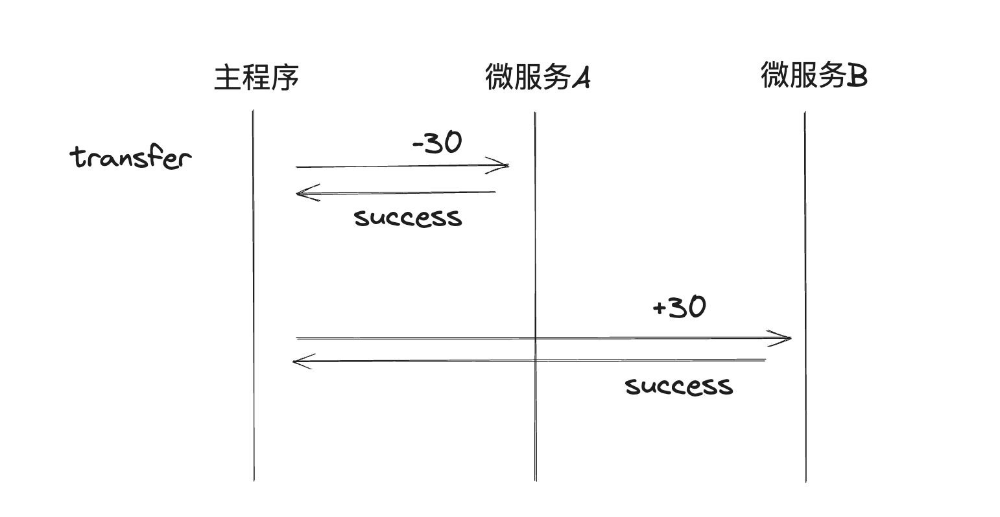
XA事务模式 (二阶段提交)
XA定义了(全局)事务管理器™和(局部)资源管理器(RM)之间的接口
-
第一阶段
- 应用程序先向全局事务管理器™注册开启全局事务
- prepare
- 应用程序开始调用参与者
- 参与者先注册子事务记录到全局事务管理器™
- 本地开始进行update
- 当所有参与者完成
， （ ）
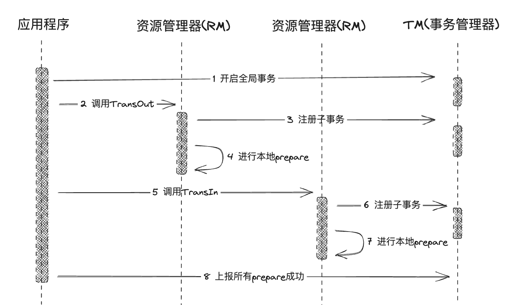
-
第二阶段
- 在经过第一阶段协调者的询盘之后
， ， ： - 所有的参与者都回复能够正常执行事务
。 - 一个或多个参与者回复事务执行失败
。 - 协调者等待超时
- 所有的参与者都回复能够正常执行事务
-
对于第一种情况
- 协调者向各个参与者发送 commit通知
， ； - 参与者收到事务提交通知之后执行 commit 操作
， ； - 参与者向协调者返回事务 commit 结果信息
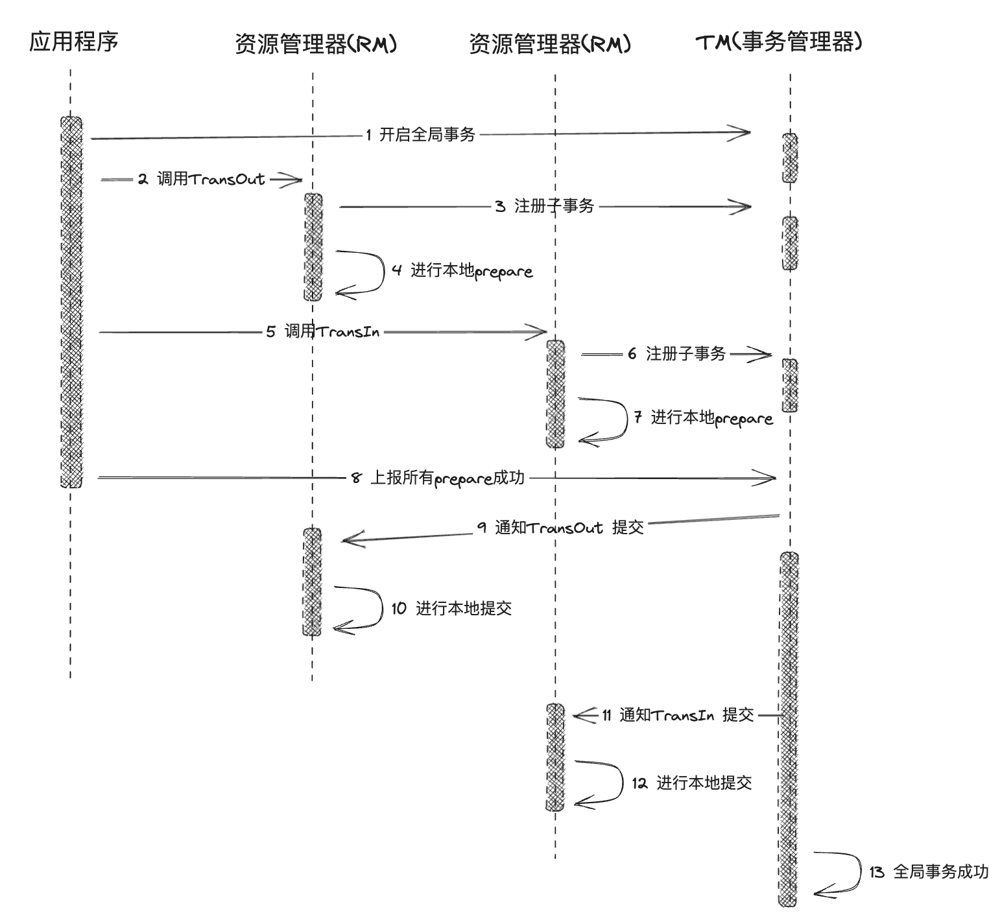
- 协调者向各个参与者发送 commit通知
-
对于失败和超时情况
- 协调者均认为参与者无法成功执行事务
， ， ， ： - 协调者向各个参与者发送事务 rollback 通知
， ； - 参与者收到事务回滚通知之后执行 rollback 操作
， ； - 参与者向协调者返回事务 rollback 结果信息
。
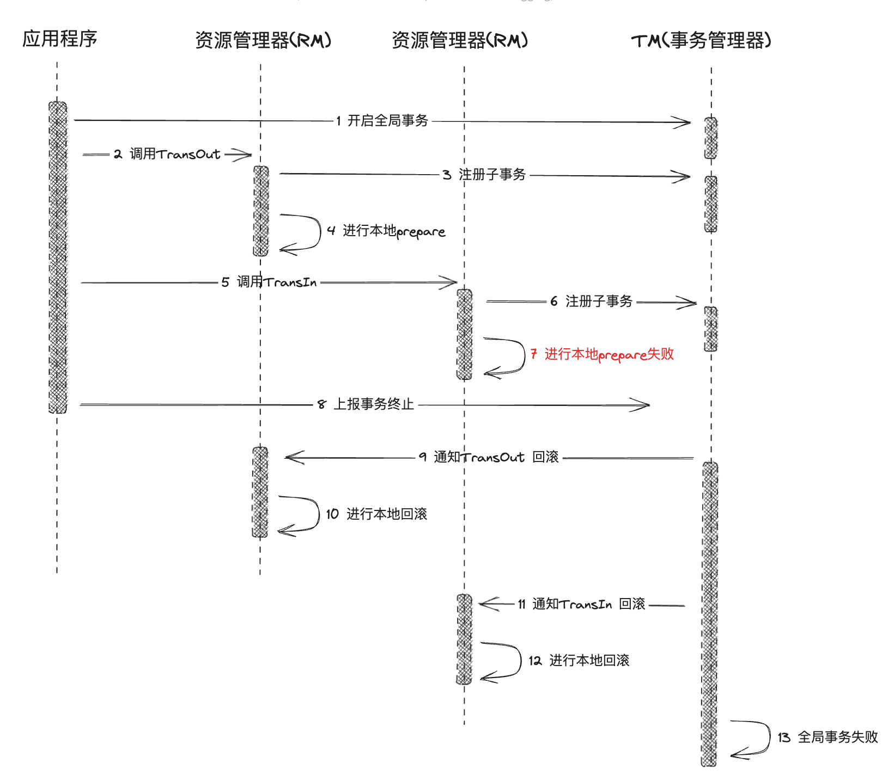
- 协调者向各个参与者发送事务 rollback 通知
- 协调者均认为参与者无法成功执行事务
- 在经过第一阶段协调者的询盘之后
但是可以发现
二阶段提交的使用场景: Mysql 是怎么保证数据不丢失的
-
我们先从一条SQL更新语句是如何执行的开始
： > mysql> update T set c=c+1 where ID=2;更新流程涉及两个重要的日志模块: redo log
（ ） （ ） -
redo log
- redo log 是 InnoDB 引擎特有的日志, InnoDB 的 redo log 是固定大小的
， ， ， 。 ， 。
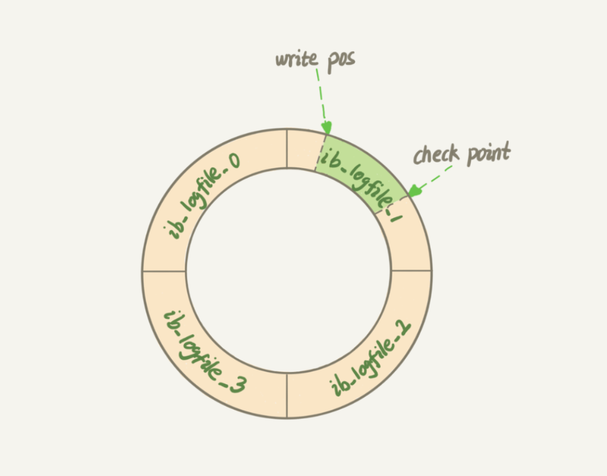
- 有了 redo log
， ， ，
- redo log 是 InnoDB 引擎特有的日志, InnoDB 的 redo log 是固定大小的
-
bin log
- bin log是MySQL server层的日志
， ， - redo log 是 InnoDB 引擎特有的
； ， 。 - redo log 是物理日志
， “ ” ； ， ， “ ” 。 - redo log 是循环写的
， ； 。 “ ” ， 。
- bin log是MySQL server层的日志
update的二阶段提交
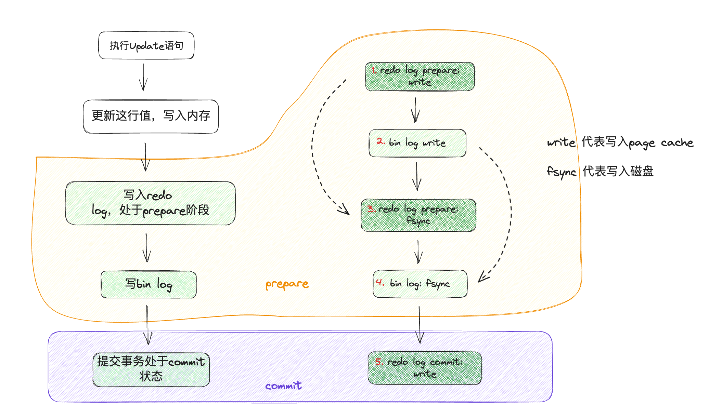
- 这样的二阶段提交可以保证binlog 与redolog 日志保证数据的一致性
- redolog 可以在数据库崩溃后
， - 由于redo log 并没有记录数据页的完整数据
， ， - 更加具体的原理可以看Mysql实战45讲
TCC事务模式
TCC 模式需要用户根据自己的业务场景实现 Try
以扣钱场景为例
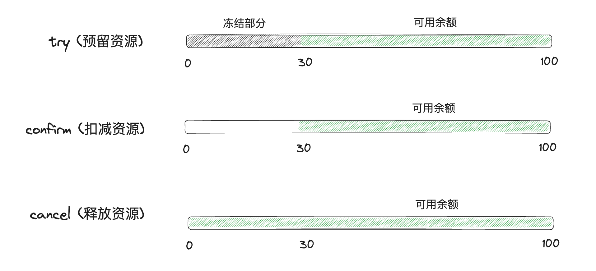
我们看一下当存在多个微服务同时处于分布式事务时:
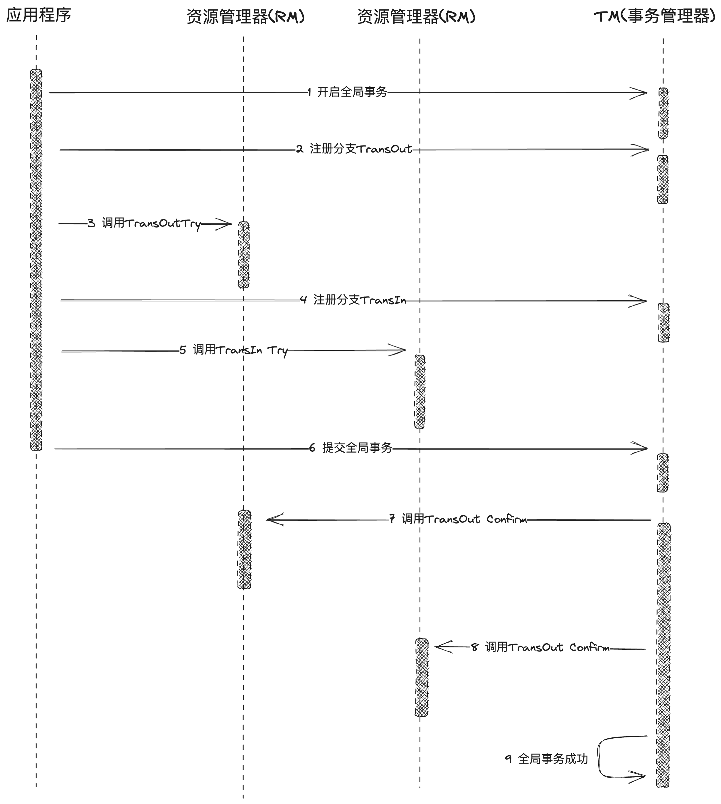
-
对于失败情况
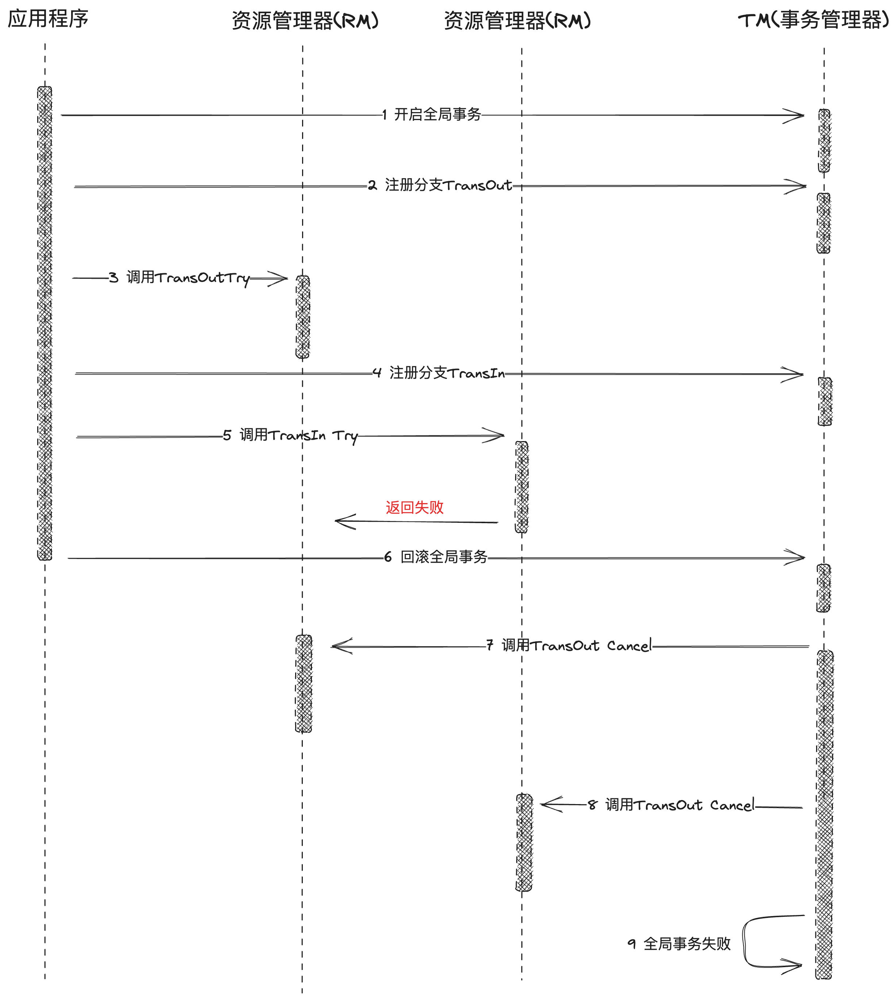
对于try阶段
-
但是对于TCC模式来说
， - 空补偿
： ， ， ， ， ， ， ， - 悬挂
： ， ， ， ， ， ， - 分布式事务还有一类需要处理的常见问题
， - 幂等
： ， ， ， ， ，
- 空补偿
-
目前TCC分布式事务异常几种情况
： - 空补偿
- 当执行try的时候
， ， ，
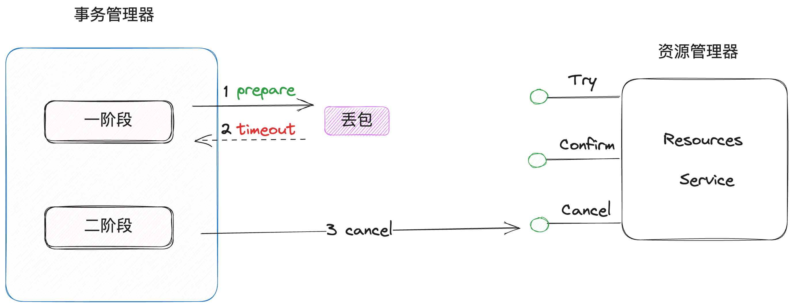
- 当执行try的时候
- 悬挂
- 因为网络问题
， ， ， ，
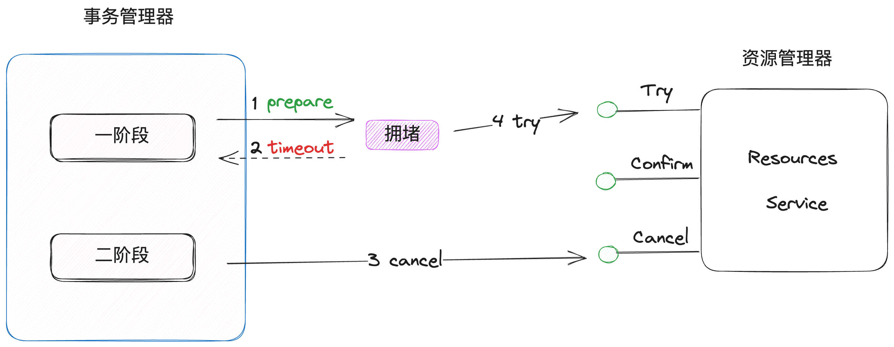
- 因为网络问题
- 幂等
- 在try阶段完成后
， ， ，
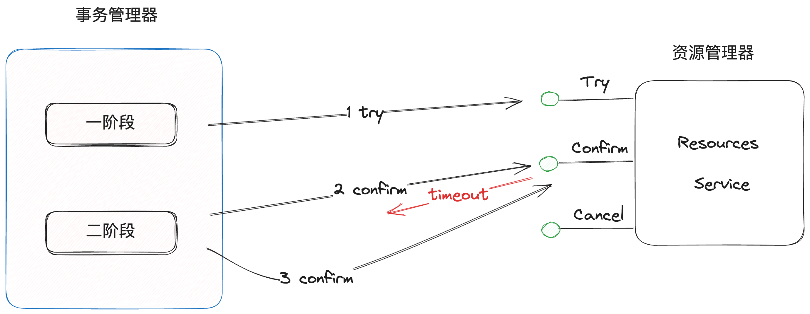
- 在try阶段完成后
- 空补偿
-
解决方案
创建一个事务记录表
， ， -
在执行try的时候
， STATUS_SUSPENDED记录, 如果没有， STATUS_TRIED记录， ， -
当cancel进来时
， STATUS_TRIED的记录， ， ， STATUS_SUSPENDED记录， ， STATUS_TRIED记录 -
当执行confirm时
， STATUS_COMMITTED记录， ， STATUS_COMMITTED记录， ，
-
可以看到TCC也是一个二阶段处理
Saga模式
Saga模式看起来比较简单
假如我们要进行买票服务
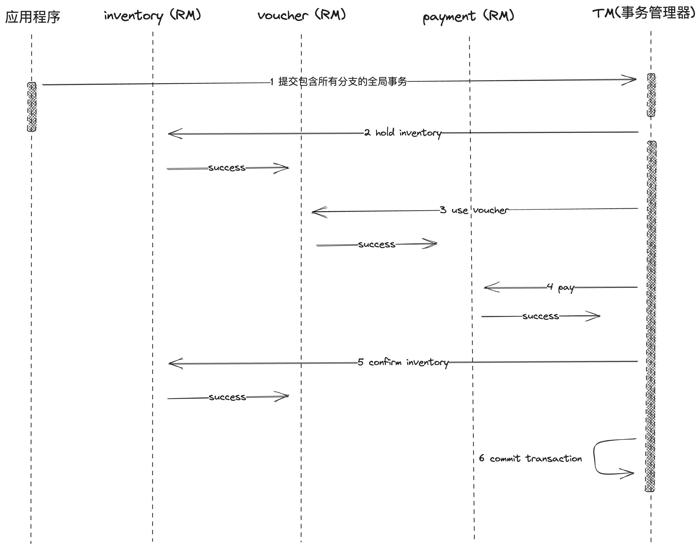
如果其中最后一步扣减库存失败
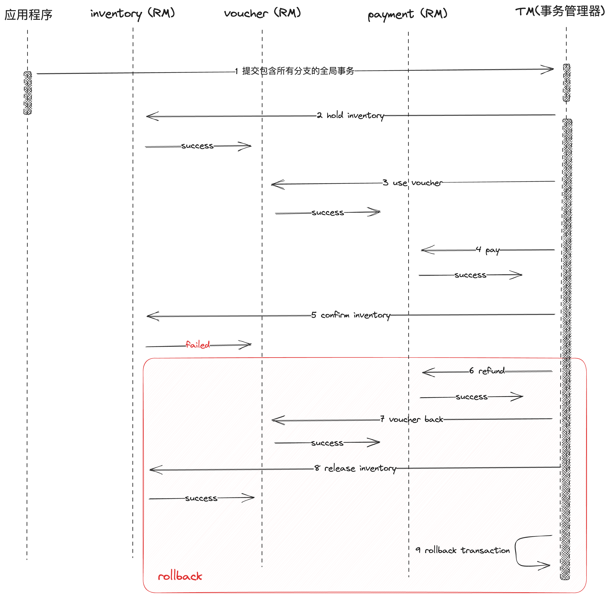
saga 可能也会出现如TCC模式的异常情况
关于saga模式的分布式事务框架
// request body
req := &gin.H{"ticket": "museum","nums": 3,"unitPrice": 2.99}
// DtmServer as server address of DTM service
saga := dtmcli.NewSaga(DtmServer, shortuuid.New()).
// add holdInventory & Compensate releaseInventory
Add("/holdInventory", "/releaseInventory", req).
// add useVoucher & Compensate backVoucher
Add("/useVoucher", "/backVoucher", req)
// add pay & Compensate refund
Add("/pay", "/refund", req)
// add confirmInventory & Compensate nothing
Add("/useVoucher", "", req)
// commit transaction
err := saga.Submit()
如上所示
- XA模式
- 通过在preapre锁住资源
， ， ， ， 。 ， 。 - 假如业务中包含集成第三方系统
， ， ， ， ，
- 通过在preapre锁住资源
- TCC
- 通过在try阶段直接预留资源
， ， ， ， ， ， - 关于TCC模式适用场景
- 但是对于业务来说
， ， ，
- 通过在try阶段直接预留资源
- Saga
- 通过对每种资源编写正向处理和补偿机制
， ， ， ， ， ， - 对于业务来说
， ， ， ， ， - 对于有些业务并不是每个资源在失败时都需要进行立马的回滚操作
，
- 通过对每种资源编写正向处理和补偿机制
业务中关于分布式事务的思考
-
假设在定票业务中
， - create order
- hold inventory
- use voucher
- pay
- confirm inventory
- add member points
- audit
- send email
-
对于支付网关
， ， ， ，
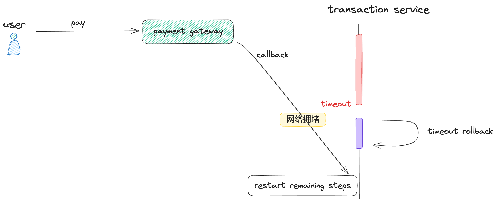
-
可以通过在cancel时插入ignore pay success record 到DB中
，
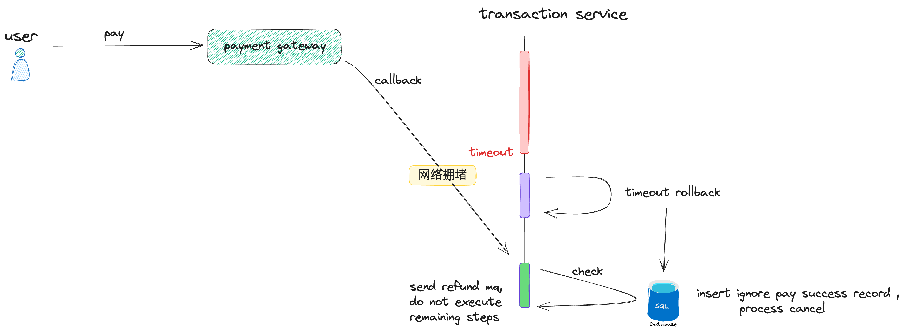
-
对于后续的审计和增加会员积分
， ， ， ，
Reference: